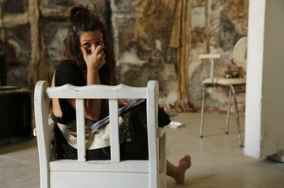

2013 Diploma. Sculpture Art Department A.S.F.A. [GPA 8.28/10.00]. School of Fine Art of Athens, Greece. Member of Performance Group of A.S.F.A. Complete two courses in Laboratory of Scenography in A.S.F.A.
2006 Diploma. School of Architecture N.T.U.A. National Technical University of Athens, Greece.
2003 Erasmus Programm scholarship for studies in, Academia di Architettura di Firenze in Italy.
Participation in group social art project «Hangers in Public Space: The Symbol of reciprocity», curated by artist and art historian Helen Polychronatou.
Participation in a workshop in collaboration with the School of Milan, Academia di Belle Arti di Brera, held in Delphi on «Delphi underworld: a contemporary artistic approach». The collaboration continued in Milan in a workshop entitled: «Study and artistic statement in a public place» held in the Tuscany village Guardistallo.
Participation in the Festival Aischyleion 2012 at Eleusis with the Group Performance of Fine Arts with individual task-action and entitled: «Reaction». The same action was presented in 2013 in the exhibition hall «CAMP!: Contemporary Art Meeting Point» in Kotzia.Sq.
Biennial participation in the 7th and 8th Universiade Theatre in Serres with the Group Perfomance of Fine Arts, on "Body and organic matter / Illusion", with individual task-action.
Scenographic proposal to play «TenTimesTwo», of David Belke held at Theatre Dye - Lakis Karalis directed by Dimitri Logothetis 2011.
Participation in the «Prague Quadrennial of Performance: Design and Space», held every four years in Prague with global participation, presentation portfolio personal stage-designing studies.
Participation in a series of workshops in Rethymno Crete topics: «Man and Nature, Play with nature, What is nature», aimed at artistic proposal on the natural environment.
Five courses and seminars contemporary dance and improvisation with contemporary dance group SineQuaNon. Several months experience in respective subjects of African dances.
Works as an Architect in her own Office, since 2006. An overview of representative works of the office follows.
Study completed and planning permission for the erection of 5 * hotel complex in Panormo Rethymnon, 431 beds, for which he was awarded by the Center for Mediterranean Architecture in Chania Triennale in the same year. For the same work was published in print in the country.
Alongside completed and reconfigure an existing frame, five floor building on the corner Sorvolou and Genimata Heraklion. The study was completed at the level of interior decoration.
Reconfigure an existing frame traditional house in the village Voroi in the municipality of Phaistos.
Reconfigure an existing frame traditional house in the village Sykologo in the municipality Viannou. The study was completed at the level of interior decoration.


- 